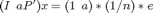
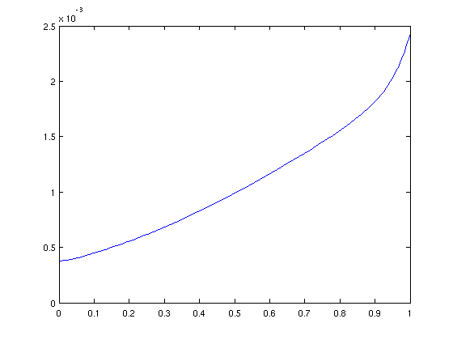

Random Alpha PageRank
See Gleich and Constantine, Random Alpha PageRank, for details about this method. PageRank is a method to evaluate the importance of nodes in a directed graph. On the graph, we follow a random walk where at each step, with probability a, we follow a randomly chosen link from the current node with probability (1-a), we jump to a randomly chosen node. (Both random choices are uniform over all the possibilities.) The stationary distribution of this Markov process is the PageRank vector. We can compute the stationary distribution by solving a linear system,  where P is the transition matrix for a random walk on the graph. In Random Alpha PageRank, we place a with a random variable, and examine the expected value of x. This computation is solving a parameterized matrix problem.
Usually, we pick a Beta random variable for a -- this corresponds to approximating x(a) with a Jacobi parameter.
Contents
Load a webgraph and setup the linear system
load('wb-cs.stanford.mat'); P = Pcc; % only use the largest strong component -- this fixes a few technical details A = @(a) (speye(size(P)) - a*P'); b = @(a) (1-a)./size(P,1)*ones(size(P,1),1); iAb = @(a) A(a)\b(a);
Setup the parameter
s = [jacobi_parameter(0,1,2,3)];
Compute the approximation
[X,errz] = pseudospectral(iAb,s,'adapt');
Get the expected solution
ex = X.coefficients(:,1);
Plot the first component
first_component = @(x) x(1); fplot(@(a) first_component(evaluate_expansion(X,a)), [0,1]);